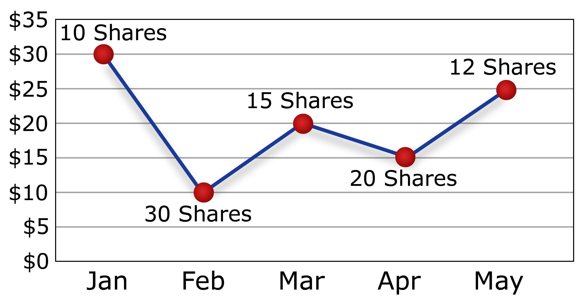

Why Is This The Case?
Click On an Age Group To Learn More!
Investing Tips!
A Powertool in Investing
Brought to you by Haresh Goyal
Today’s stock market becomes increasingly more difficult to navigate. Picking the right companies is certainly a hard choice that even some of the greatest investors struggle with. To make matters worse, a number of external factors are always impacting the market. Whether it be hype, or threats from random sources, investors should always stay educated and know what to look for.
Here are some tips investors can follow to find success in the markets.
For many financial advisors, fund managers, and individual investors, diversification is a rallying cry. It's a portfolio management method that combines many investments into a single portfolio. Diversification is the concept that a wide range of assets will provide a greater return. It also implies that diversifying one's investment portfolio will reduce risk. Individual equities should not account for more than 10% of your whole portfolio. The balance of your money should be invested in a diverse portfolio of low-cost index mutual funds. Stocks are not a good place to put money if you need it in the next five years.
Remember that purchasing a share of a company's stock entitles you to a portion of the company's ownership. As you evaluate possible business partners, you'll come across an enormous quantity of data. When donning a "business buyer" hat, though, it's much easier to zero down on the proper items. You want to know how this firm functions, where it fits into the wider industry, who its rivals are, what its long-term prospects are, and whether it adds value to your existing portfolio of enterprises. You may recall the Gamestop craze, when a slew of investors poured money into unproven "meme" businesses, effectively gambling their money away. It resulted in better returns for some, but it resulted in the loss of future savings for others.
According to some of the world's best analysts, your age is should determine the level of risk you should take. Stocks are relatively risky; meaning we should employ other forms of investments. Let's take a look at how age should diversify your portfolio.
Please Enter Your Age:
Click On an Age Group To Learn More!
Onto More Tips!
For many financial advisors, fund managers, and individual investors, diversification is a rallying cry. It's a portfolio management method that combines many investments into a single portfolio. Diversification is the concept that a wide range of assets will provide a greater return. It also implies that diversifying one's investment portfolio will reduce risk. Individual equities should not account for more than 10% of your whole portfolio. The balance of your money should be invested in a diverse portfolio of low-cost index mutual funds. Stocks are not a good place to put money if you need it in the next five years.
An investor's strength is time, not timing. The most successful investors acquire stocks because they anticipate to be rewarded over years, if not decades, through share price gain, dividends, and other means. That means you may take your time when it comes to purchasing.
Here are two purchasing tactics that will help you avoid price volatility:
The dollar-cost average technique may appear difficult, but it isn't. Investing a specific amount of money at regular periods, such as once a week or once a month, is known as dollar-cost averaging. When the stock price falls, that fixed sum buys more shares, and when the stock price rises, it buys less shares, but it evens out the average price you pay. Investors can set up an automatic investment plan with several online brokerage services.
If you can't decide which of the firms in a certain industry will win in the long run. Get them all! Purchasing a stock basket relieves the stress of selecting "the one." If you have a position in all of the players that pass your analysis, you won't miss out if one of them takes off, and you can utilise the profits from that winner to cover any losses. This technique will also assist you in determining whether firm is "the one" so that you may increase your stake if necessary.